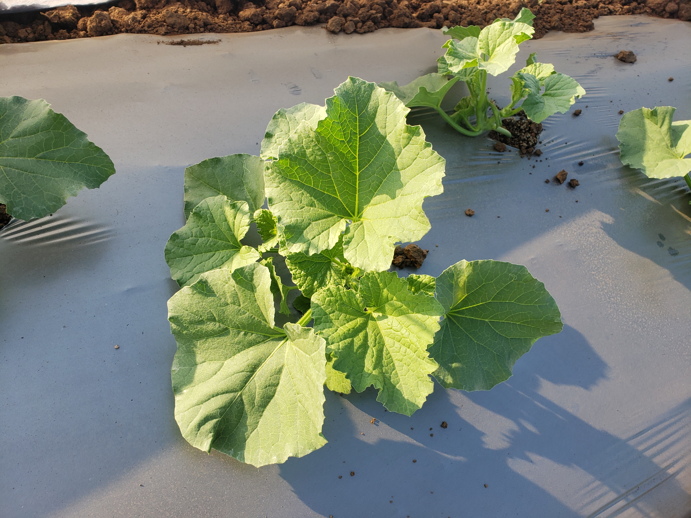
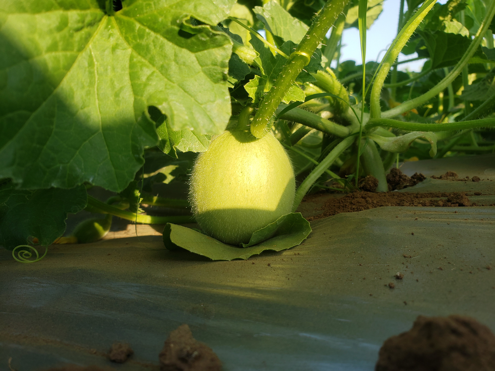

High-Yield Muskmelon Production
Muskmelon (Cucumis melo L.) is a high-value, warm-season crop prized for its sweetness and aroma. Achieving elite yields of 30 tonnes per acre and higher requires a modern, integrated system focused on precision. Success hinges on selecting high-potential F1 hybrids and managing their growth environment to maximize quality, particularly the Total Soluble Solids (TSS or Brix), which is the primary indicator of sweetness.
Optimal Temperature
25°C to 35°C. Hot, dry weather during ripening is ideal.
Target Sweetness (Brix)
11% to 16%. A key quality indicator for premium markets.
Engineering the Root Environment

High-Density Planting & Vertical Trellising
A vertical trellising system is a core technology for unlocking ultra-high yields. Growing melons vertically allows for a dramatic increase in plant population, improves disease control by enhancing air circulation, and results in higher quality, blemish-free fruit.
- Use Transplants: Start with healthy, uniform transplants (sown 3-4 weeks pre-planting) to ensure a perfect, high-density stand and an earlier harvest.
- Spacing: For a trellised system, space plants 12 to 24 inches apart within the row, with rows spaced 5 to 6 feet apart.
- Fruit Support: As melons develop, each fruit must be placed in an individual sling or net tied securely to the trellis to support its weight and prevent vine breakage.
Dynamic Fertigation Schedule
Nutrients must be "spoon-fed" through the drip irrigation system to match the crop's needs. The nutrient ratio must change from N-dominant to K-dominant to steer the plant from vegetative growth to high-quality fruit production.
Note: Foliar sprays of Boron and Zinc at flowering are critical for successful pollination and fruit set.
Physiological Growth Cycle
The muskmelon's rapid development cycle is divided into five key physiological stages, each with a distinct management objective.
Harvesting for Peak Quality
